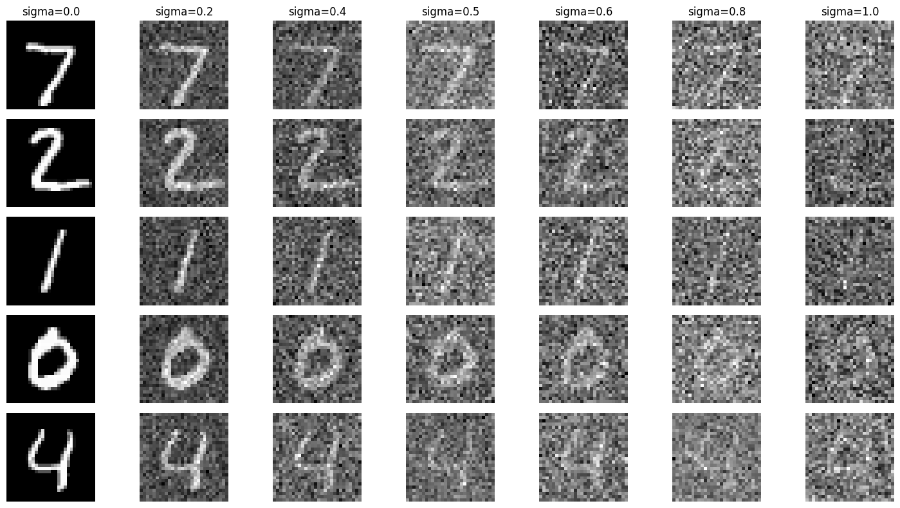

Project 5 Results
Part A: The Power of Diffusion Models!
Part 0: Setup
For these and all following results, I use a seed of 180. I noticed that the results, while not the highest quality of images, tended to match the text prompts well. I didn't notice a massive difference in quality of output when running with 10 versus 20 inference steps.
Inference Step = 20
Inference Step = 10
Part 1: Sampling Loops
1.1 Implementing the Forward Process
Campanile with Noise at Different Timesteps
1.2 Classical Denoising
Noisy and Gaussian-Denoised Side by Side
1.3 One-Step Denoising
Original, Noisy, One-Step Denoised
Timestep 250
Original, Noisy, One-Step Denoised
Timestep 500
Original, Noisy, One-Step Denoised
Timestep 750
1.4 Iterative Denoising
Iterative Steps
Original, Iteratively Denoised, One-Step Denoised, Gaussian Blurred
1.5 Diffusion Model Sampling
5 Sampled Images
1.6 Classifier-Free Guidance (CFG)
5 CFG Sampled Images
1.7 Image to Image Translation
Starting with Prompt "a high quality photo" to Campanile test image
Starting with Prompt "a high quality photo" to Golden Gate test image
Starting with Prompt "a high quality photo" to Macbook test image
1.7.1 Handdrawn and Web Images
Starting with Prompt "a high quality photo" to Lebron Test Image
Original Lebron Test Image
Starting with Prompt "a high quality photo" to Handrawn House Test Image
Original Handdrawn House Test Image
1.7.2 Inpainting
Original, Mask, To Replace
Inpainted Campanile
1.7.3 Text-Conditional Image-to-image Translation
"a rocket ship" to Campanile
"a photo of a man" to Lebron
"an oil painting of a snowy mountain village" to Handdrawn House
1.8 Visual Anagrams

An Oil Painting of an Old Man
An Oil Painting of People around a Campfire
Amalfi Coast
Hipster Bartender
Waterfall
Snowy Mountain Village
1.9 Hybrid Images
Hybrid Image of a skull and a waterfall
Hybrid Image of a skull and a waterfall
Hybrid Image of "a lithogram of Batman's face" and "a lithograph of a scene of bats flying", seed=180
Hybrid Image of "a lithogram of Thanos's face" and "a lithogram of three purple flowers", seed=7
Part B: Diffusion Models from Scratch!
Part 1: Training a Single-Step Denoising UNet
Unconditioned UNet

Denoising
Unconditioned Training Losses
Denoised Results on Digits from Test set after 1 Epoch

Denoised Results on Digits from Test set after 5 Epochs
Out of Distribution Testing
Time-Conditioned UNet
Time-Conditioned Training Losses
Sampling results for Time-Conditioned after 5 Epochs
Sampling results for Time-Conditioned after 20 Epochs
Class-Conditioned UNet
Class-Conditioned Training Losses
Sampling results for Class-Conditioned after 5 Epochs
Sampling results for Class-Conditioned after 20 Epochs
Denoising
Unconditioned Training Losses
Denoised Results on Digits from Test set after 1 Epoch
Denoised Results on Digits from Test set after 5 Epochs
Out of Distribution Testing
Time-Conditioned Training Losses
Sampling results for Time-Conditioned after 5 Epochs
Sampling results for Time-Conditioned after 20 Epochs
Class-Conditioned Training Losses
Sampling results for Class-Conditioned after 5 Epochs
Sampling results for Class-Conditioned after 20 Epochs